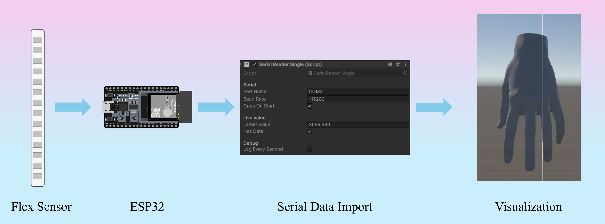

Real-time Finger Bending
Wearable flex sensor → Rigged 3D hand in Unity (real time)
I developed a low-cost sensing pipeline that uses a commercial flex sensor to drive a rigged 3D hand in Unity. The system performs real-time calibration, distributes motion across MCP/PIP/DIP joints, and applies subtle tilt correction for anatomically realistic finger curl.
Problem
Camera-based finger tracking often breaks in real-world settings due to occlusion and lighting variability. Recent advances in flexible electronics and wearable sensing offer an opportunity to build smart gloves that capture motion directly at the source. My goal was to create a low-cost, real-time system that converts physical finger deformation into intuitive 3D hand movement for interactive applications.
Approach
- ESP32 reads flex sensor → one value per line over USB serial.
- Unity
SerialReaderSingleparses and smooths the stream. - Calibration maps raw values (flat→bent) to joint rotation degrees.
- Distributed rotation across MCP/PIP/DIP for natural curl.
- Tilt bias compensates roll drift for more realistic movement.
System Diagram
Tech
- ESP32
- Unity
- C#
- Serial
- WebGL
What's Unique
- Robust mapping from raw triboelectric signal to anatomically plausible curl.
- Pure WebGL demo + desktop serial mode for hardware tests.
- Architecture ready to scale to 5-sensor smart glove.
- Real-time multi-sensor streaming (CSV) and visualization
Next
- Per-finger robust calibration.
- Machine Learning integrated gesture recognition and haptic feedback.
- Flexible-electronics-based textile-integrated smart glove + Per-user calibration pipeline.